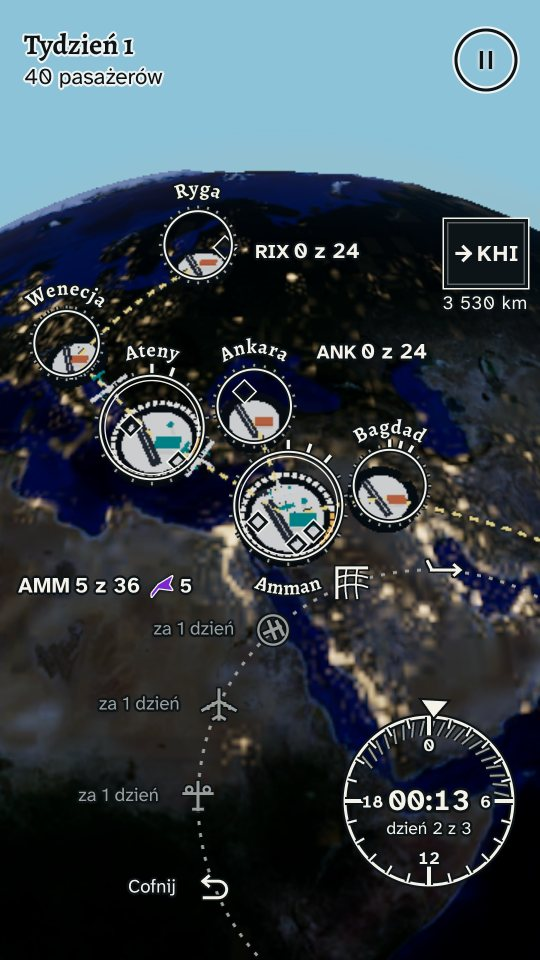
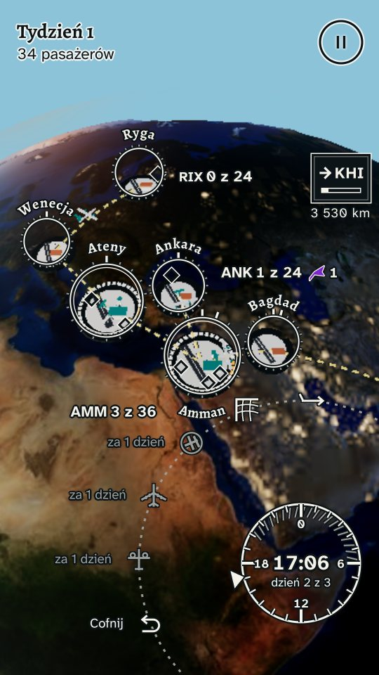
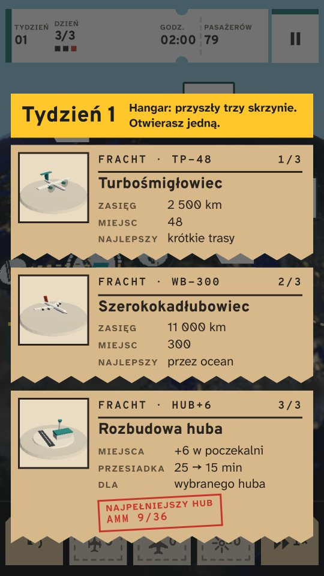
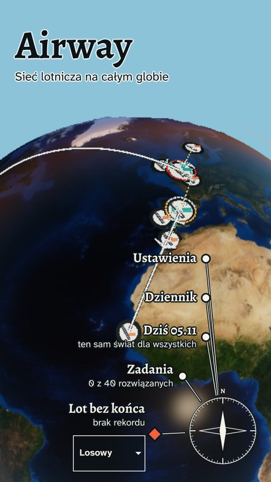
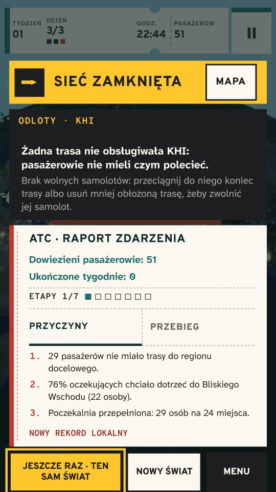
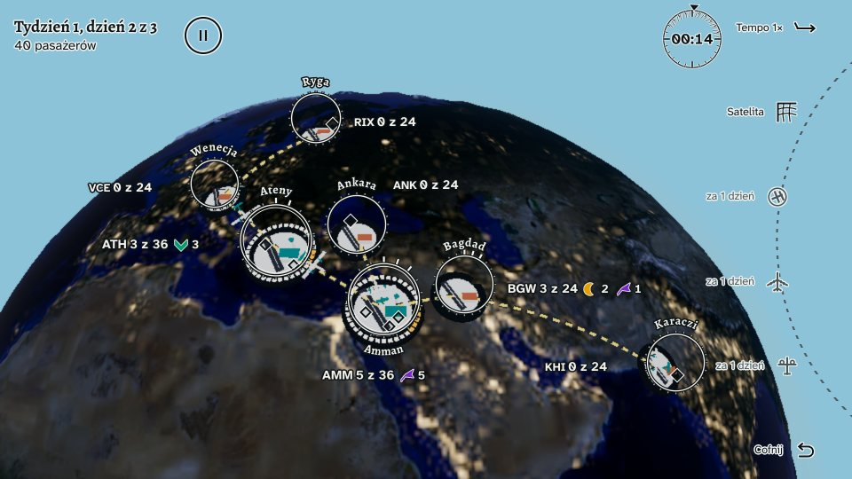
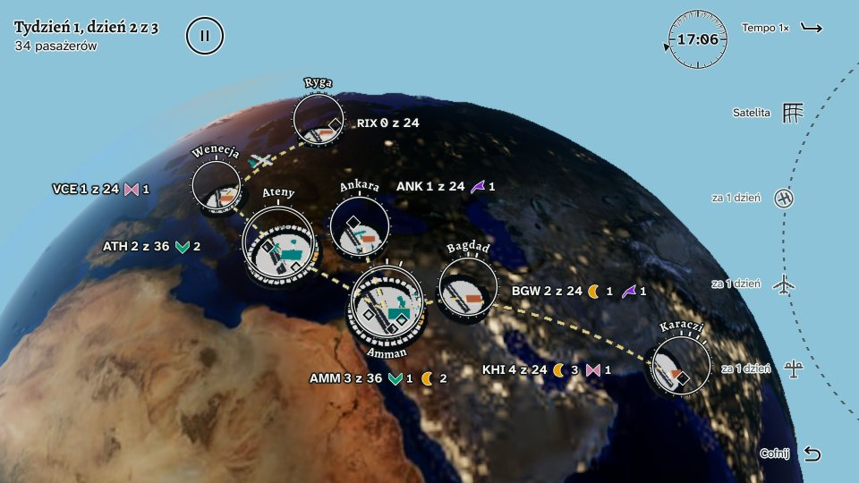
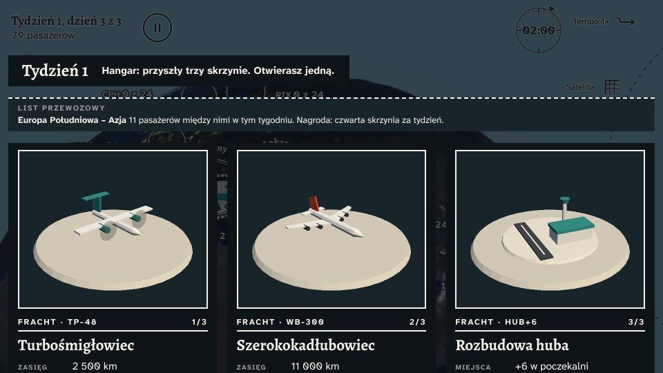
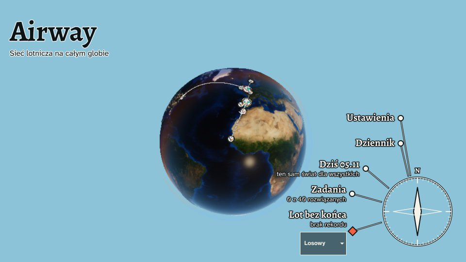
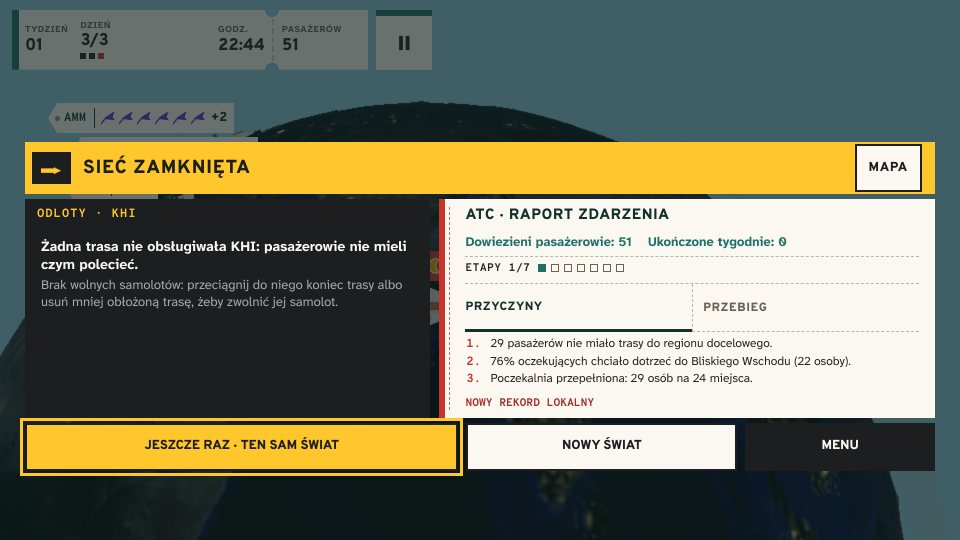

Dla prasy
Fakty, opisy i materiały graficzne o Airway w jednym miejscu. Zrzuty pochodzą z bieżącej wersji gry; do premiery szczegóły mogą się jeszcze zmienić.
Pobierz pakiet prasowy (ZIP)Zrzuty PNG w pełnej rozdzielczości po polsku i po angielsku, logo, ikona oraz karta faktów z opisami w plikach tekstowych.
Karta faktów
- TWÓRCA
- Zespół Airway · dane wydawcy wkrótce
- GATUNEK
- Strategia i łamigłówka o sieci połączeń lotniczych
- PLATFORMY
- Android, iOS
- PREMIERA
- Data wkrótce
- CENA
- Bez reklam i bez zakupów w aplikacji
- JĘZYKI
- polski, angielski
- KONTAKT
- contact@airway.games
- STRONA
- airway.games
Krótki opis
Logiczna gra o trasach na globusie 3D. Łącz miasta i chroń huby przed zatorem.
Pełny opis
Stwórz własną sieć połączeń lotniczych na trójwymiarowym globusie. Łącz miasta trasami, rozbudowuj lotniska i planuj przesiadki pasażerów. Samoloty latają samodzielnie — Ty decydujesz, którędy prowadzą połączenia.
Zrzuty ekranu
Dziesięć kadrów z gry w Twoim języku: pięć pionowych i pięć poziomych. W pakiecie są te same sceny w PNG 1080×1920 i 1920×1080, po polsku i po angielsku.










Logo i ikona
Logo i ikona są w pakiecie jako SVG i PNG. Prosimy nie zmieniać proporcji ani kolorów (żółty #FFC72C, czarny #1C1E20).
Wideo z rozgrywki
Nagranie z prawdziwej rozgrywki dołączymy do pakietu, gdy będzie gotowe.
Zasady użycia
Zrzuty, logo i opisy możesz wykorzystać w materiałach o Airway. Nie dorysowuj na zrzutach elementów, których nie ma w grze.